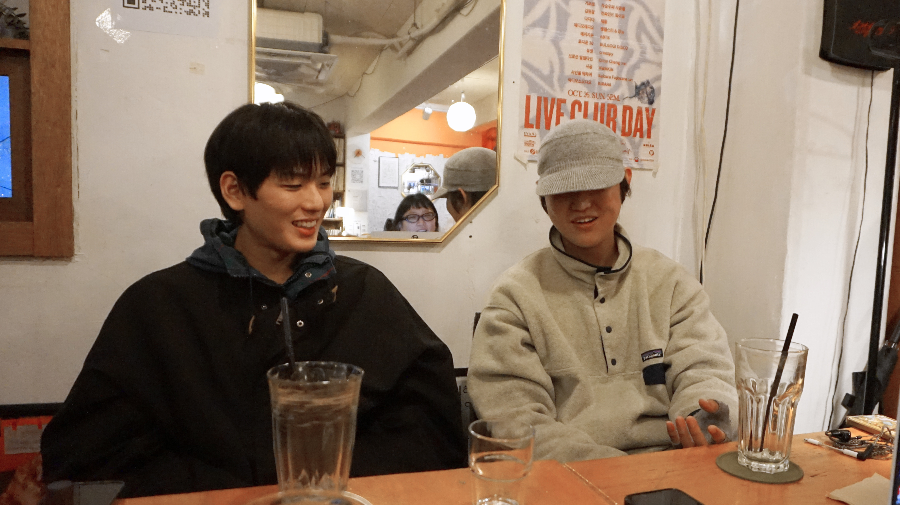

2024년 첫 EP [산만한시선]을 발표하며 데뷔한 포크 듀오 산만한시선(서림, 송재원)은 4개월 만에 한국대중음악상 ‘올해의 신인상’을 수상했다. 이어 정규앨범을 발표하고 첫 단독 콘서트 <生活의 發見: 생활의 발견>을 개최하기까지 1년여간 쉼 없이 활동을 이어온 두 사람을 만나, 스스로 세운 기준과 앞으로의 방향을 물었다.

Q 최근 첫 단독 콘서트 <生活의 發見: 생활의 발견>을 진행하셨습니다. 축하드려요. 소감이 궁금해요.
재원 감사합니다. 이번 공연은 아무래도 저희가 공연장 대관 신청부터 시작해서 전부 직접 만든 공연이다 보니 “우리가 설계한 대로 끝까지 잘 마무리됐으면 좋겠다”라는 생각이 있었어요.
Q 완전히 기획자 마인드인데요?
서림 맞아요. 오히려 공연 자체는 많이 떨리지 않았어요. 저희 두 사람이 편하게 할 수 있는 셋으로 구성을 하기도 했고요. 저희는 공연 중간에 만담을 해야 하는데 떨면 안 되니까요.
재원 그리고 그 전까지 ‘나는 가수다’라는 생각을 잘 안 했어요. 근데 단독 공연을 하고 나니까, 이상하게 '나 이제 가수가 돼버렸다' 같은 느낌이 오더라고요.
Q 공연 이후로는 요즘 뭐 하면서 지내셨어요?
재원 복싱을 하고 있어요. 서림이가 같이 해보자고 복싱 세트를 선물해 줘서 시작했어요. 저는 이제 6일 차고요. 서림이는 두달 정도 됐어요.
서림 작은 대회라도 나가서 둘이 체급도 다르고 하니까 메달 하나씩 따보자는 생각으로 하고 있어요. 무엇보다 '사람 주먹이 이렇게 위험한 거구나'를 몸으로 배우는 중이고요. 재원이는 언젠가 우리가 블루스 앨범을 내게 되면 그때 콘셉트를 복싱으로 하면 좋겠다는 얘기를 재원이가 하더라고요. 그러려면 안 배우고 거짓으로 하는 건 저희 성격에 용납이 안 되니까 열심히 배우고 있습니다.
Q 1년 전 첫 EP를 발매했을 때보다 활동이 많아졌을 텐데요. 회사 없이 독립적으로 활동하면서 어려운 점과 좋은 점이 있다면요?
재원 독립적으로 하기 때문에 어려움을 느끼는 건 사실 너무 당연한 것 같아요. 행정, 홍보, 현장 실무 같은 것들을 직접 익혀서 꾸준히 이어가고 싶은지, 아니면 음악 외 업무는 전문가에게 맡기고 나는 음악만 할 것인지 사이에서의 선택이에요. 저희는 직접 공부해서 우리 시스템을 만들어 놓으면 좀 더 멀리 갈 수 있겠다고 생각을 한 거죠. 처음에는 “누가 뭘 해야 되지?”를 매번 다 직접 정해야 하는 게 힘들긴 했어요. 처음엔 그걸로 서로 힘들다고 징징거리기도 했고요.
서림 그래도 하나씩 익혀서 우리 방식으로 체계를 만들면 그게 또 장점이 되더라고요. 지금은 역할이 꽤 정리됐어요.
Q 그럼 음악 외의 일들은 어떤 식으로 나눠서 하고 있나요?
서림 디자인은 둘이 같이 하고요. 행정 업무는 재원이가 맡고 있어요. 정리를 잘하고 깔끔한 스타일이라. 인스타그램 관리랑 홍보는 제가 온전히 맡고요.
재원 제가 홍보실장이라고 불러요.
서림 인디펜던트 뮤지션이 된다는 건 책임이 큰 것 같아요. 그럼에도 내가 만드는 음악이나 공연이 훼손되는 게 싫으면 이렇게 해야되는 거죠. 대신 무대 조명이나 부스 운영처럼 꼭 필요한 부분들은 전문가분들과 계약해서 진행하고 있어요.
Q 거의 회사를 만드는 일 같아요. 둘이 팀으로 오래 같이 움직이면서 관계나 대화도 달라진 게 있나요?
재원 서로 너무 다른데 같이 오래 하다 보니까 서로 잘 할 수 있는 것에 대해 정확히 알아요. 서림이는 거시적으로 보는 걸 되게 잘해요. 저는 조금 좁게 보는 스타일이라서 어릴 때는 서림이 말이 맞는 것 같으면서도 반발심에 괜히 “이거 아닌 것 같아” 하기도 했는데 이제는 웬만하면 수긍하는 편인 것 같아요. 서림이가 뭔가 결정해서 말했을 때에는 ‘거기에 대한 충분한 근거가 있고, 시간을 들인 생각이겠지’ 하고 믿는 거죠.
Q 두 분 다 영화를 좋아하시는 걸로 알고 있어요. 이번 앨범 <산만한시선2>에도 영화와 동명인 곡들이 많아요. 혹시 음악 작업에 대한 생각도 있으신가요?
서림 영화 제작을 해보고 싶어요. 영화 음악도 마찬가지고요. 서로 영화 이야기를 많이 해요. 저희 생각에 영화는 참 어려운 예술인 것 같은 거예요. 미적 감각도 있어야 되고 설계적인 부분도 완벽해야 되고 그리고 시간 안에 모든 걸 해결해야 하는 것도요. 당시 영화라는 작업에 대한 선망이 둘 다 엄청 높은 상태였어요. 저희가 제목을 가져온 영화들도 마찬가지고요. 하지만 그 영화에 감명을 받아서 곡을 썼다기 보다는 그 영화와 같은 분위기와 맛을 좀 담고 싶었던 부분이 더 커요.
재원 노래를 이해하기 쉽도록 힌트를 주는 거죠.
서림 우리가 얘기하고 싶은 시대의 한국성이 있는데 가사에 연도를 다 써놓을 수는 없으니까요. 하지만 영화는 그게 되잖아요. 간판이 바뀌고 차 번호판 색깔이 바뀌었을 거고 사람들의 복장이나 말투가 바뀌었을 텐데 그래서 제목, 그리고 제목과 같이 가는 가사를 통해서 표현하는 방식을 선택한 것 같아요.
Q 서림님의 인생을 바꾼 음악으로 영화 ‘싱 스트리트’의 OST 중 <Go Now>를 꼽은 인터뷰를 본 적 있어요. 그 영화가 특별했던 이유가 있을까요?
서림 그 영화에서만 느낄 수 있는 분위기가 있죠. 그리고 어렸을 때 제 학교 생활이 그 영화 내용과 비슷했어요. 마르고 연약해서 무리에 잘 끼지 못했고, 영화 속에서 주인공의 형이 그랬던 것처럼 아버지가 LP를 엄청 많이 들려주신 것도 비슷해요. 아버지가 “너는 음악을 만들어야 된다, 네 입으로 만들어야 된다” 같은 말을 자주 하셨어요. 학교 축제에서 직접 만든 노래를 공연하고, 좋아하는 여자애 앞에서 노래 부르고, 새벽에 몰래 문을 뜯고 들어가서 합주하기도 하고요. 심지어 영화가 개봉했을 때 아버지랑 같이 봤어요. 그러고 나니까 더 선택이 과감해졌죠. “나 음악할 거다” 하고요.
Q 재원님은 어떤 영화를 가장 좋아하세요?
재원 저는 이창동 감독의 ‘오아시스’를 좋아해요. 오아시스에서 풍기는 행복하고 싶은데 상황이 절망적이라서 그렇게 흘러갈 수밖에 없는 이야기요. 또 다른 영화 ‘시’도 비슷하다고 생각하는데요. 뭔가 느낌, 색감이랑 캐릭터 설정에서부터 오는 그 변태 같은 설정 값들이 저는 너무 좋은 것 같아요.
서림 뭔가 산만한시선 음악 자체가 이창동 감독님 영화랑 좀 비슷한 것 같아요. 막 이창동 감독님 영화 보면 ‘밀양’이나 ‘버닝’처럼 냉랭한 분위기도 있는 반면에 ‘오아시스’랑 ‘시’ 같은 영화도 있잖아요. 그리고 중간에서 ‘박하사탕’ 같은 영화도 있고요. 저희도 이창동 같은 영화와 음악을 해보고 싶어요.
재원 그래서 저희는 영화 제작도 하고, 음악 감독도 되는 목표가 있습니다.
Q 이전 EP에서 중국 포크 아티스트 ‘쑹둥예(宋冬野)’의 영향을 언급했었는데요. 이번 앨범을 준비하면서 영향을 준 뮤지션이나, 최근 관심 있는 해외 음악이 있나요?
서림 저는 장르 상관없이 다 들어요. 이번 ‘로살리아’ 앨범도 진짜 좋아하고, 하이퍼팝도 많이 듣고요. 요즘은 밴드 ‘기스’의 음악도 많이 들어요. 저는 이런 음악들도 지금 우리가 만들고 있는 음악에 새로운 아이디어를 줄 수 있을 것 같아요. 사실 포크에 슈게이즈처럼 노이즈가 들어가면 안 될 이유가 없고 또 지금 같은 시대에 포크가 맥시멀 하면 안 되는 이유도 없고요. 그래서 앞으로 그런 부분에서의 변화가 더 많이 느끼지 않을까 해요. 뭔가 어쿠스틱한 악기들이 내야 되는 소리를 다른 것들이 내는 방법에 대해 관심이 많아요.
재원 저는 헤리티지 같은 아저씨 음악들이요. 해외쪽으로는 ‘쳇 앳킨스’ 같은 아저씨들이 있고, 요즘에는 ‘정형근’ 아저씨 노래도 많이 듣고 있고요. 저는 귀에 익숙한 것들을 찾으면서 익숙한 걸 더 탄탄하게 만드는 편이에요.
서림 두 사람이 이런 걸 섞으면 또 좋은 게 나오더라고요. 장르적으로 정체가 모호해 보일 수 있지만 재밌는 작업물이 나오는 것 같아요.
재원 맛있는 ‘제육스파게티’ 같은 음악이요.
Q 스스로 이번 앨범을 “실패한 다큐멘터리”라고 고백했는데요. 그럼에도 그대로 담아 내놓은 이유를 듣고 싶어요.
재원 진짜 다큐로 해보자 하고 시작했던 게 <강릉아산병원>이라는 곡이었고 <차이나타운>은 경험에 좀 더 가까운 노래인 것 같아요.
서림 실제로 보고 겪은 것들이 기본이고요. 서사와 아름다움을 좀 더 부여하고 싶었던 것 같아요. 저희는 이걸 오토픽션이라고 생각해요. 픽션에 가깝지만, 또 픽션이라고 하기엔 다큐에 가까운 그런 애매한 지점이요.
재원 그렇지만 사실을 왜곡시키고 싶은 마음은 없었어요.
서림 있는 그대로 담자고 시작했는데 저희도 모르게 자꾸 은유가 나오고 자꾸 따뜻함이 나오면서 쑥스러운 마음에 “실패한 다큐멘터리”라고 표현하게 된 거예요. 저희는 너무 자랑스러운 앨범이에요. 사실 내고 난 다음에는 어떻게 불리든 상관없는 것 같아요. 이미 듣는 사람들의 것이잖아요. 누가 “잘 만든 다큐”라고 하면 감사한 거고, “실패”라고 하면 그 또한 그 사람의 감상인 거죠.
Q 유튜브 계정에 올라온 앨범 언박싱이나 카메라 반납 영상이 인상적이었어요. 앞으로도 계속할 계획이 있으신가요?
서림 내년에는 유튜브도 좀 활성화해보려고 해요. 근데 어떻게 하면 더 우리다운 형식으로 만들 수 있을까… 계속 생각 중이에요. 그리고 음악만이 아니라, 사람들을 불러서 이야기하는 포맷도 해보고 싶고요. 공연으로 먹고사는 사람, 유통사에서 일하는 사람, 현장 스태프… 이런 사람들 이야기도 같이 담아보고 싶어요.
Q “한국 포크의 엉뚱한 기준이 되고 싶다”는 말을 하신 걸 봤는데요. 좀 더 자세히 들어볼 수 있을까요?
서림 저희가 막 나서는 걸 좋아하는 스타일은 아니거든요. 선두에 서고 싶다거나 혁명가가 되고 싶은 마음 보다도 “이렇게 해도 돼”라고 말해줄 수 있는 기준이 되고 싶은 꿈이 있어요. 성공하려면 어떤 앨범을 만들어서 어떤 프로모션을 해야 하고 이런 것들이 어느 정도 정해져 있다고 한다면, 반면에 이렇게 해도 산만한시선처럼 될 수 있다는 엉뚱한 기준이 되고 싶은 거죠.
재원 사실 저희는 ‘포크 듀오’라는 말도 낯설었어요. 그래서 ‘포크 듀오가 뭘까?’를 생각하게 됐고, ‘김민기’, ‘김광석’ 선생님들 이후로 포크의 계보가 끊겼다는 느낌을 받은 거예요. 그래서 우리가 포크의 계보를 만들고 싶다는 생각으로 하고 있어요. 저희는 음악을 전문적으로 배운 게 아니니까 막 “북한산에서 한 삽, 지리산에서 한 삽” 이런 식으로 여기저기서 퍼오다 보면 어느덧 산이 만들어져 있을 것 같아요. 그러다 산이 만들어졌을 때, 사람들이 보고서 “저기 산이 있었네”, “저 산이 오르기 좋대”, “토양이 참 좋대” 할 수 있으면 좋겠어요.
서림 조그마한 데에서 그냥 세상 사는 것처럼 서로 나누고 교류하고 만담하고 하는 이야기꾼 같은 음악이 없거든요. 다들 주연 배우가 되고 싶어하잖아요. 아직까지 저희는 구전 가요, 이야기꾼 이런 것들을 하고 싶어요.
Q ‘산만한시선 십계명’이 재밌어요. 대단하다고도 생각했고요. 어떤 계기로 만들게 됐나요?
서림 첫 번째는 앨범을 더 완성도 있게 만들기 위해서였어요. 자본이나 외부 요인 때문에 포기하지 않을 힘이 필요했거든요. 그래서 “우리가 스스로를 묶어두자”는 의미로 만들었죠. 돈이 없으면 “이 정도 세션에서 마무리하자” 같은 타협을 하게 되는데, 십계명이 있으면 적어도 “그 선은 넘지 말자”가 되니까요.
재원 결과적으로는 잘 만든 것 같아요. 저희가 가만히 두면 흘러갈 수 있는 걸, 우리를 계속 붙잡아주는 장치가 됐어요. “이거 약속했으니까 우리도 끝까지 가자” 같은 식으로요. 쾅쾅 대자보를 건 거예요.
Q “망쳐도 우리 손으로 망치자”라고 말할 만큼 독립적인 두 분인데, 지원사업으로 EP를 제작하면서 제약이 된 부분과 반대로 지원 덕분에 가능했던 것이 있다면요?
서림 인천음악창작소의 프로페셔널한 분들과 작업을 하다 보니, 연차가 1년도 안 된 뮤지션으로서 원하는 방향으로 설득하는 게 힘들었어요. 제가 좀 강경하게 얘기하는 쪽이었고 재원이가 중간에서 잘 설득해줬어요.
재원 음악할 때는 또 짐승이 될 수밖에 없으니까요. 그치만 같이 일하는 방식도 만들어내고 그러면서도 좋은 방향으로 이끌어내는 걸 알게 됐죠.
서림 아무리 봐도 저희가 원하는 대로 하려면 일정 안에 끝내기 어려울 것 같으니까 걱정해주셨던 거죠. 사실 엄청 감사한 마음이에요. 다 좋은 분들이세요. 음악창작소 식구분들이 같이 공연도 와주셨어요.
재원 그럼에도 지원 덕분에 가능했던 것도 분명 있고요. 결국 그 경험이 지금처럼 요구하고 설득하고, 끝까지 밀어붙이는 방식을 만들었다고도 생각해요.
Q 1년 사이에 관객 규모도, 팔로워도 크게 늘었잖아요. 스스로도 많이 달라졌다 싶었던 순간이 있었나요?
서림 2년 전에 산만한시선으로 무대에 섰는데 관객이 2명이었던 적이 있어요. 관객보다 저희랑 스태프가 더 많은 거죠. 그런데 이제는 130명 공연도 하니까 그게 너무 신기해요. 예전에는 저희도 관객을 늘리려고 버스킹을 했거든요. 공연 홍보하려고요. “저희 오늘 공연하는데 무료로 오세요” 하면서. 그러다 경찰이 와서 자리를 옮기기도 하고… 근데 그렇게 하면 진짜로 한 10명은 더 와요. 어르신들께 “지금 오면 반값으로 해드릴게요” 하고 말씀드리고, 그럼 제가 매니저한테 가서 “반값 가능해요?” 이렇게 물어보고 그런 식으로 채웠었어요. 공연 전에 미리 와서 A4로 포스터를 뽑아달라고 하고, 한 명은 돌리고 한 명은 리허설하고, 이렇게 교대로요.
Q 이런 이야기는 오늘 처음 듣는데요?
서림 저희도 처음 얘기하는 거예요. 비 오는 날 종이가 다 젖어도 했어요. 기획 공연에서는 저희 둘만으로는 안 팔리니까, 다른 뮤지션도 한 명씩 더 섭외돼요. 그럼 같이 공연하는 친구를 설득하기도 했죠. “오늘 6만 원 벌 거, 2만 원만 더 벌자” 이런 얘기하면서요. 주변에 아직도 그렇게 발로 뛰면서 음악하는 뮤지션들이 아직 몇 명은 남아 있어요.
Q 진짜 멋있네요. 20년 전 얘기를 듣는 것 같아요.
재원 저희도 진짜 구전가요처럼 전해만 듣던 걸 해보자 했던 거예요. 크라잉넛 아저씨들처럼요. 그리고 희열도 있었던 것 같아요. ‘나 내 노래 때문에 이렇게까지 해’ 하는 마음이요. 서림이가 자주 하던 말이 있어요. “네 노래가 네 새끼인데, 네가 책임져야지 누가 책임질 거야?”라고요. 산만한시선도 그런 마음으로 하고 있는 거예요. 우리가 만든 음악, 우리가 잉태한 녀석들을 책임지면서 살자.
Q 음악 외에 도전하고 싶은 다른 분야가 있나요? 앞으로 산만한시선이 어떤 것들을 해나갈지 궁금합니다.
서림 일단 영화를 준비 중이에요. 그리고 복싱도 제대로 더 해보고 싶고요. 가능하다면 출판도 해보고 싶어요. 아이도 어른도 읽을 수 있는, 음악이 매개체가 되는 그림책이요. 김민기 선생님이 아동극을 많이 만드셨잖아요. 포크를 하면 어쩔 수 없이 인간적인 다정함이 생각나는 것 같아요. 좋은 것들을 어떻게 담을까 생각하다 보면 가장 순수하게 담는 게 좋은 것 같고, 그 순수함을 가장 잘 받아들일 수 있는 청자와 독자가 누가 있을까 하면 결국 아이들더라고요. 생활을 담는 음악을 진심으로 하고 있다면 시간이 지나서 약간 잔물결처럼 남는 게 아이들인 것 같아요.
재원 저희 둘 다 “이야기”를 좋아해서, 음악 밖에서도 계속 뭔가를 만들 것 같아요. 영화든 책이든.
Q 마지막으로, 앞으로 활동하면서 “이것만은 하고 싶지 않다” 하는 것이 있다면 각자 말해주세요.
서림 토마토 먹는 거요. 예를 들면 뭐 토마토 축제에서 토마토 먹방을 해야 되거나 토마토 홍보대사가 돼서 “토마토 맛있게 먹어주세요.” 하게 되더라도 전 토마토 못 먹어요.
재원 저는 춤이요. 춤추는 내 모습이 싫어요. 그래서 챌린지 같은 것도 못하겠어요.
서림 저도 챌린지는 싫지만, 춤은 자신 있습니다.
재원 서림이는 춤 잘 춰요.
Q 긴 시간 동안 인터뷰해주셔서 감사합니다.
서림 너무 재밌었습니다.
재원 애정을 갖고 질문해주셔서 감사합니다.